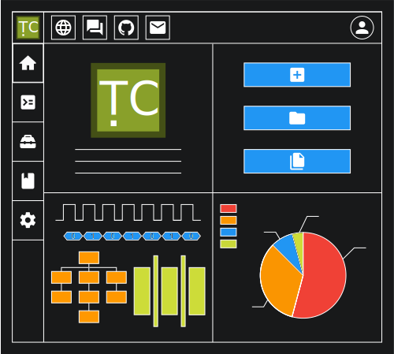

跳到主要内容
如果你喜欢木心项目，请在
GitHub
上给我们点一个星！⭐️
文档
木心工具集
木心处理器
博客
全部内容
版本发布
应用案例
新闻动态
社区
插件市场
代码仓库
交流论坛
比赛活动
在线教程
外部资源
合作伙伴
下载
团队
支持
中文（中国）
English
中文（中国）
Help us translate
GitHub
木心项目
创建免费、易用的RISC-V处理器核和开发工具集
开源免费
简单易用
扩展性强
支持的操作系统:
Windows
Linux
Mac
开始上手
